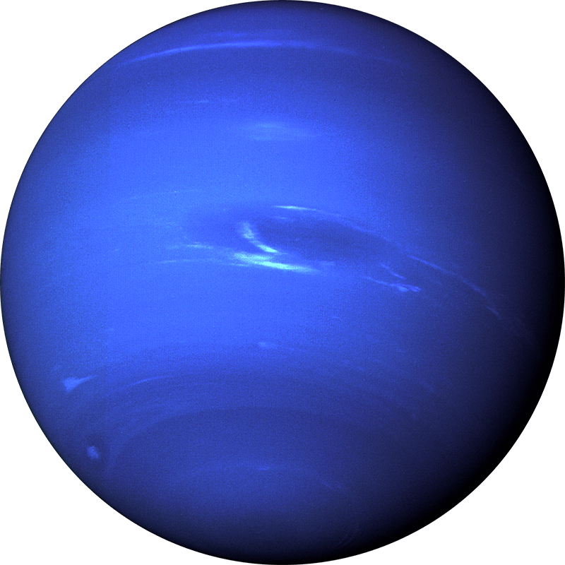
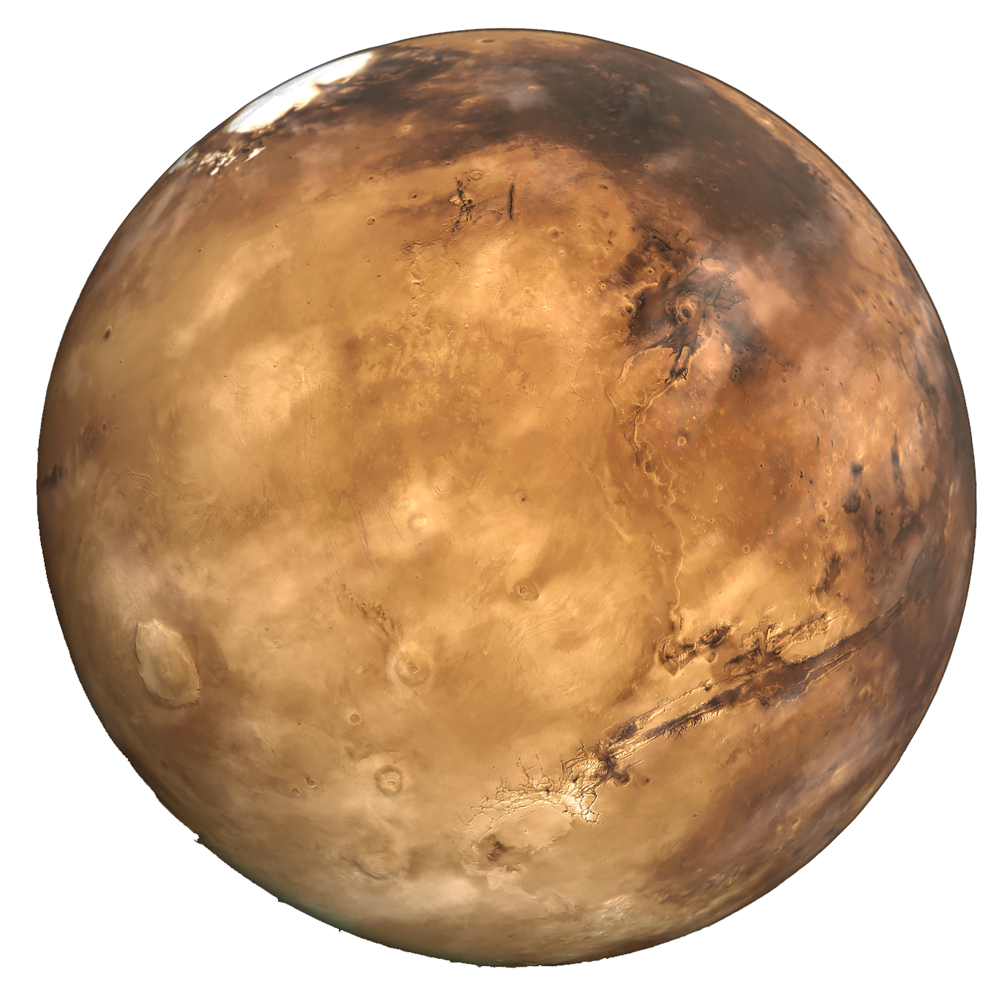
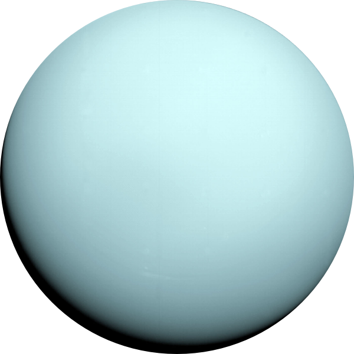
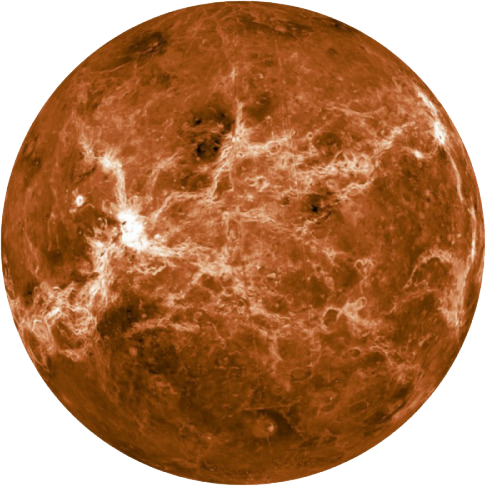
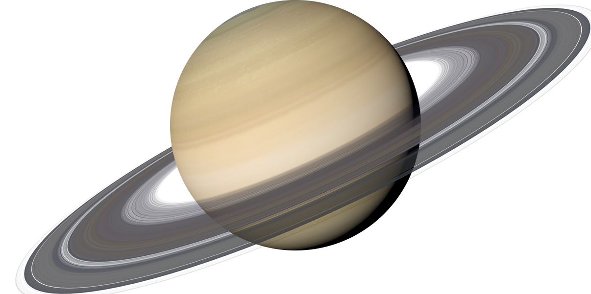

Мерку́рий — ближайшая к Солнцу планета Солнечной системы, наименьшая из планет земной группы. Названа в честь древнеримского бога торговли — быстрого Меркурия, поскольку она движется по небесной сфере быстрее других планет.
Подробнее

Юпи́тер — крупнейшая планета Солнечной системы, пятая по удалённости от Солнца. Наряду с Сатурном, Ураном и Нептуном, Юпитер классифицируется как газовый гигант.
Подробнее

Земля́ — третья по удалённости от Солнца планета Солнечной системы. Самая плотная, пятая по диаметру и массе среди всех планет и крупнейшая среди планет земной группы, в которую входят также Меркурий, Венера и Марс.
Подробнее

Непту́н — восьмая и самая дальняя от Земли планета Солнечной системы. Нептун также является четвёртой по диаметру и третьей по массе планетой. Масса Нептуна в 17,2 раза, а диаметр экватора в 3,9 раза больше земных. Планета была названа в честь римского бога морей.
Подробнее

Марс — четвёртая по удалённости от Солнца и седьмая по размерам планета Солнечной системы; масса планеты составляет 10,7 % массы Земли. Названа в честь Марса — древнеримского бога войны, соответствующего древнегреческому Аресу.
Подробнее

Ура́н — планета Солнечной системы, седьмая по удалённости от Солнца, третья по диаметру и четвёртая по массе. Была открыта в 1781 году английским астрономом Уильямом Гершелем и названа в честь греческого бога неба Урана.
Подробнее

Вене́ра — вторая по удалённости от Солнца планета Солнечной системы, наряду с Меркурием, Землёй и Марсом принадлежащая к семейству планет земной группы. Названа в честь древнеримской богини любви Венеры.
Подробнее

Сату́рн — шестая планета от Солнца и вторая по размерам планета в Солнечной системе после Юпитера. Сатурн, а также Юпитер, Уран и Нептун, классифицируются как газовые гиганты. Сатурн назван в честь римского бога земледелия.
Подробнее